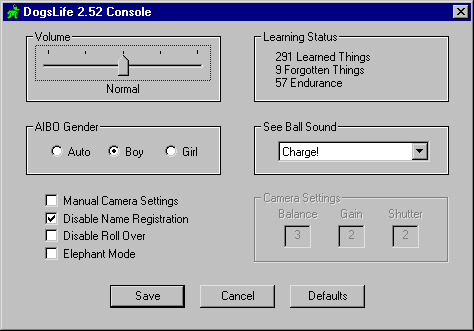

DogsLife Console
Contents of this website are freeware and/or copyrighted material, and may not be sold under any circumstances.
Email: dogsbody@dogsbodynet.com Home: https://dogsbodynet.com
| Configuring & Tweaking DogsLife: The DogsLife Console (or DogCon) permits changing various settings, and is found in the memory stick "CUSTOM" folder. The following can be configured:

You can configure the volume to be off, quiet, normal, loud,
or maximum. Normal volume is recommended. DogsLife
normally learns if its a boy or girl from praise (ie: Good Boy or
Girl). However, if you have multiple AIBO's and want to avoid
confusion, this setting locks in the gender. Gender affects
the probability of DogsLife doing various things, and how territory is
"marked." DogCon offers various replacements for those people driven mad by the "to-la-de-do to-do" charge melody. The default camera settings normally work well. However,
if your environment is unusually bright or dark, adjusting the camera
settings manually might improve AIBO ability to see the ball & self
dock. This
is an advanced override, and isn't recommended unless
you're familar with AIBO camera adjustment. You can easily
make things worse. The manual camera settings overrides
DogsLife's ability to auto-sense colors (particularly when
self-docking). The available camera settings fields are:
You must enable "Manual Camera Settings" before the
above fields are available.
Nothing is worse than losing a perfect name capture. Sometimes AIBO incorrectly "hears" the name-registration command, and overwrites the capture. Once you've taught DogsLife its name (and your name), disable name registration to prevent such problems. DogsLife can rollover on command, and sometimes does it
himself (I guess it feels good). If you run DogsLife on a
hard floor surface, this behavior might not be desirable. DogsLife learns & forgets things based on his experience,
praise & scolding. If you want to prevent DogsLife from ever
forgetting anything, enable elephant mode. The status pane shows how much DogsLife has learned &
forgotten, and any endurance gains or loss. Endurance
indicates how active your AIBO is (1 to 100). AIBO gets tired
faster with low endurance. High endurance means you've a
soccer & exploration maniac on your hands. |